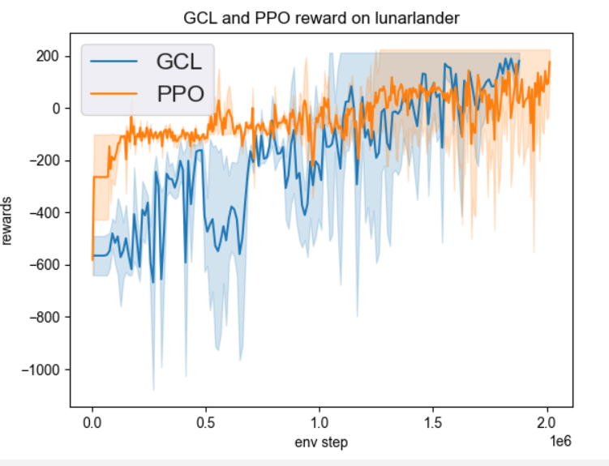
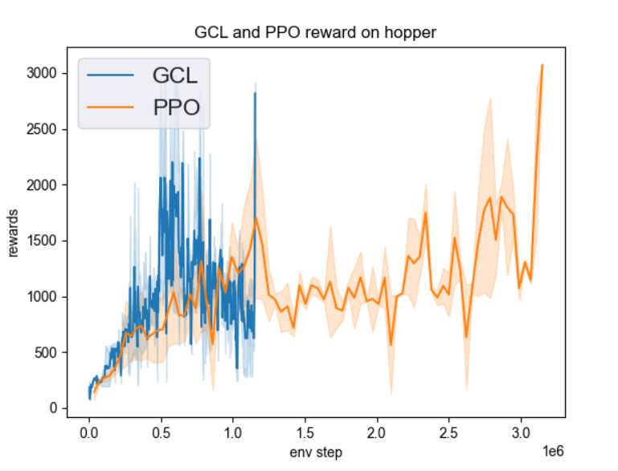

Guided Cost Learning¶
综述¶
Guided Cost Learning(GCL)是一种逆强化学习算法，在 Guided Cost Learning: Deep Inverse Optimal Control via Policy Optimization 中被提出。 Inverse Reinforcement Learning的一个基本思路就是，在给定的专家数据下，学习一个奖励函数，使得这个专家策略在这个奖励函数下是最优的，但这个奖励函数却并不是唯一的。在 Maximum Entropy Inverse Reinforcement Learning 和 Maximum Entropy Deep Inverse Reinforcement Learning 中提出了利用最大熵原理的方法来求奖励函数。GCL算法实在这些算法的基础上，利用最大熵原理，使用神经网络来表征一个非线性的奖励函数。GCL算法在训练过程中可以同时学习一个奖励函数reward function和策略policy。 GCL算法主要应用于控制领域，如机械臂控制等场合。
快速了解¶
GCL 是可以同时学习 reward function （奖励函数） 和 policy （策略） 的逆强化学习算法。
GCL 支持 离散 和 连续 动作空间。
GCL 算法可与 PPO 或者 SAC 等 policy-based 或 Actor-Critic 算法结合，同时学习reward function和与GCL相结合的policy。
GCL 学到的reward function的输入为 state 和 action，输出为估计的 reward 值。
重要公示/重要图示¶
GCL算法基于最大熵原理的一个基本公式：
其中 \(\tau\) 指轨迹样本， \(p(\tau )\) 表示奖励函数算出的cost值，在这个模型下，次优的轨迹以指数递减的概率发生。
可以推出IRL的log-likelihood目标：
采用重要性采样的方法，可以记 :math: w_j = frac{exp(-c_{theta}(tau_j)) }{q(tau_j)}， Z=sum_{j}w_j 可得：
使用该Loss函数来训练GCL算法的reward模型。
{kind=link}
{kind=link}
扩展¶
GCL 可以和以下方法相结合：
使用PPO或SAC算法中Actor网络算出的概率值作为训练reward function时的轨迹概率 \(q(\tau )\), 使用GCL reward function算出的reward值作为训练PPO或SAC算法时的reward值。
实现¶
其中使用的奖励模型接口如下所示：
- class ding.reward_model.guided_cost_reward_model.GuidedCostRewardModel(config: easydict.EasyDict, device: str, tb_logger: SummaryWriter)[source]
- Overview:
Policy class of Guided cost algorithm.
- estimate(data: list) None[source]
- Overview:
estimate reward
- Arguments:
data (
List): the list of data used for estimation
- Returns / Effects:
This can be a side effect function which updates the reward value
If this function returns, an example returned object can be reward (
Any): the estimated reward
- train(expert_demo: torch.Tensor, samp: torch.Tensor, iter, step)[source]
- Overview:
Training the reward model
- Arguments:
data (
Any): Data used for training
- Effects:
This is mostly a side effect function which updates the reward model
实验 Benchmark¶
environment |
best mean reward |
evaluation results |
config link |
|---|---|---|---|
Lunarlander |
2M env_step, reward 200 |
 | |
Hopper |
3M env_step, reward 2950 |
 |
注：
以上结果对比了生成专家模型的PPO算法和使用专家模型的GCL算法，对比了best mean reward和达到best mean reward所用的env_step
参考文献¶
Chelsea Finn, Sergey Levine, Pieter Abbeel: “Guided Cost Learning: Deep Inverse Optimal Control via Policy Optimization”, 2016; arXiv:1603.00448.